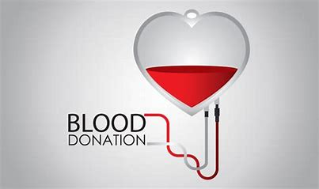
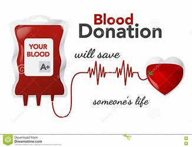

Most people can give blood. You can give blood if you are:
Healthy person.
Weigh between 50kg and 160kg.
Aged between 17 and 66
Men can give blood every three months and women can give blood every four months.
There is no restriction on anyone that everybody should do blood donation. But it is our responsibility to donate blood and save many lives.

There are four ABO groups:
Group A: The surface of the red blood cells contains A antigen, and the plasma has anti-B antibody that would attack any foreign B antigen containing red blood cells.
Group B: The surface of the red blood cells contains B antigen, and the plasma has anti-A antibody that would attack any foreign A antigen containing red blood cells.
Group AB: The red blood cells have both A and B antigens, but the plasma does not contain anti-A/anti-B antibodies. Individuals with type AB can receive any ABO blood type.
Group O: The plasma contains both types of anti-A/anti-B antibodies, but the surface of the red blood cells does not contain any A/B antigens. Having none of these A/B antigens means that they can be donated to a person with any ABO blood type.

Why Donate Blood?
A blood donation truly is a “gift of life” that a healthy individual can give to others in their community who are sick or injured. In one hour’s time, a person can donate one unit of blood that can be separated into four individual components that could help save multiple lives.
From one unit of blood, red blood cells can be extracted for use in trauma or surgical patients. Plasma, the liquid part of blood, is administered to patients with clotting problems. The third component of blood, platelets, clot the blood when cuts or other open wounds occur, and are often used in cancer and transplant patients. Cryoprecipitated anti-hemophilic factor (AHF) is also used for clotting factors.